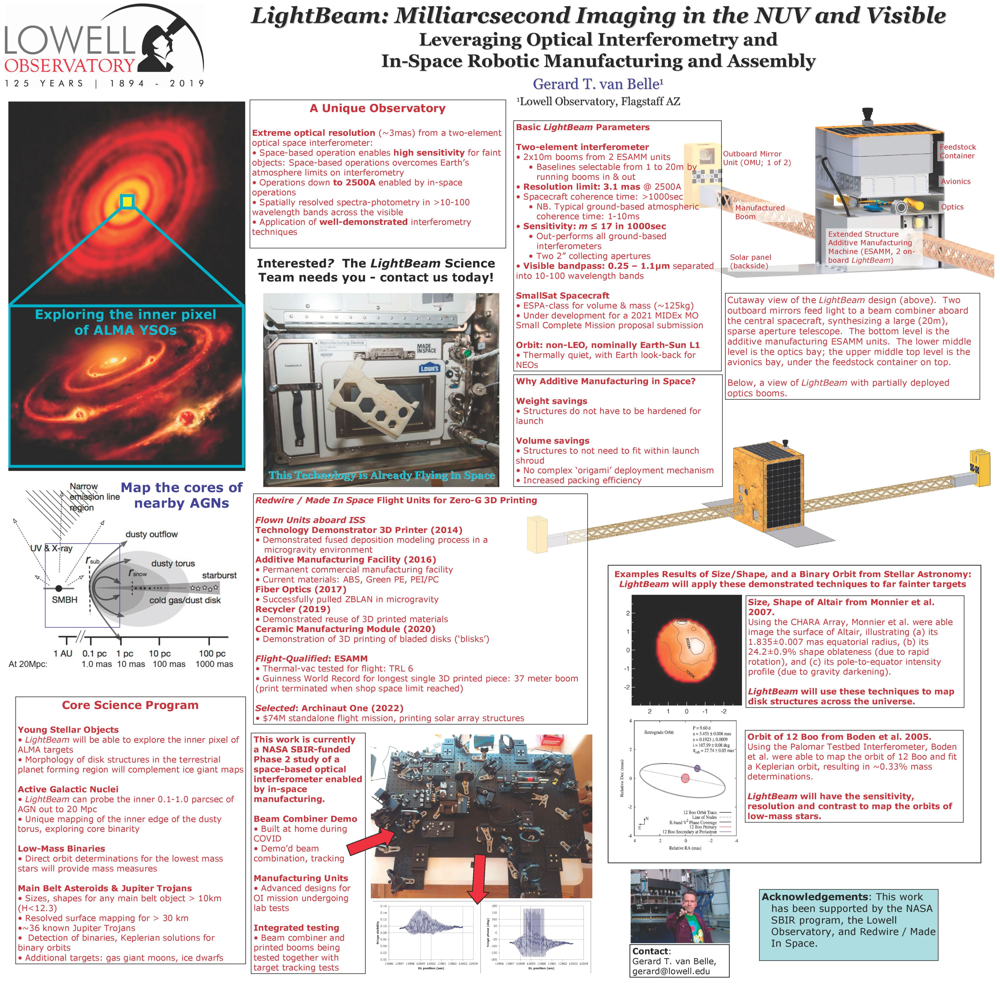

LightBeam: Milliarcsecond Imaging in the NUV and Visible
Gerard T. van Belle1
1Lowell Observatory, Flagstaff AZ
Stars and Planets in the UV
Arizona State University, Phoenix, AZ
May 2021

Links of interest
Lead author: Gerard van Belle
Institutions: